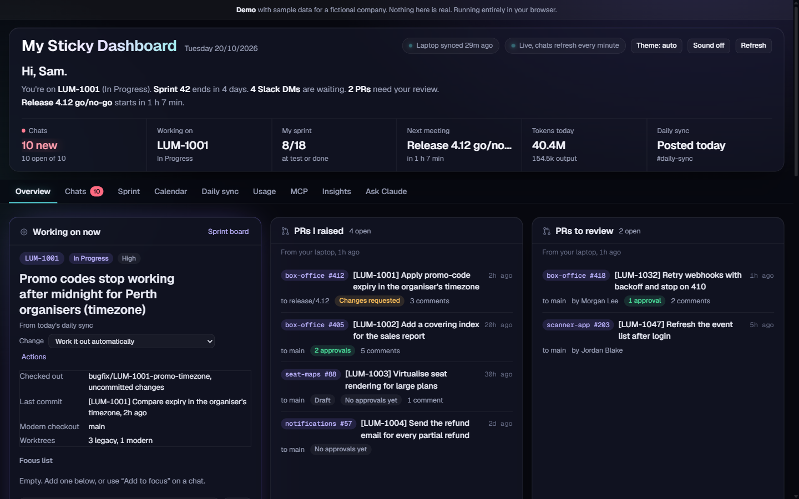

Senior full-stack engineer · .NET · TypeScript · SQL
I use AI coding agents every day. These notes are about checking their work.
I work on a live ticketing and payments platform with Claude Code as a daily tool. The agent writes a lot of the code; I review, test and decide. These are write-ups from that work: what the agent got wrong, how it was caught, and what changed afterwards.
Twelve times I corrected the AI
Twelve real bugs and risks in AI-written code, how each was caught, and the rule that came out of it. Most of them looked correct.
Read → Case studyAn AI reviewer on a PR with a planted bug
I planted a SQL injection in a PR and gave it to an AI reviewer running my review procedure. It found the bug, then two real ones I hadn't planted.
Read → Case studyAn AI reviewer on a retry change that passes every test
A retry change that passes every test. The reviewer found the planted double-post, then a hanging-request bug I'd written without noticing.
Read → ProcessHow my AI workflow evolved
Sixteen rewrites of my agent workflow in six weeks, each traced to the failure that caused it, and the eight lessons that held up.
Read →Built this way
My Sticky Dashboard
The work dashboard I use every day: the ticket I'm on, my PRs, Slack, the sprint, my calendar and the daily stand-up, with AI drafts I approve before anything is sent. Rebuilt on sample data with a typed API, 38 unit and API tests, 8 Playwright tests and CI.
Source is private and available on request.
